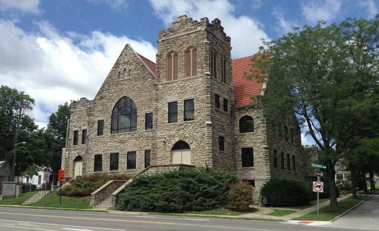

Friends,
I'm excited to be coming to your area this week, and I hope you'll be able to join me!
This is special to me, because I grew up in Kansas City, Kansas, and the two communities where I'll be speaking -- Rainbow Mennonite Church and Grace United Methodist Church -- are doing such important work. And I'm delighted to join my friends Rev. Ruth Harder (Rainbow) and Rev. Nanette Roberts (Grace) who lead these congregations.
I invite you to join me at any of these upcoming events:
On Wednesday August 3rd at the Rainbow Mennonite Church, the church of my earliest memories as I attended from ages 3 - 10 when it was a United Methodist-Mennonite congregation, there will be a small meeting with Mennonite Young Adult Volunteers over food and conversation at the Mennonite Voluntary Service House .jpg) followed by a Community Meet and Greet reception in Fellowship Hall that is open to the public. The community gathering is from 7:00 - 9:30. Rainbow Mennonite Church is located at 1444 Southwest Blvd, Kansas City, KS. Please read this thoughtful open letter to me from church member Joshua Chittum to have a sense of this evening of conversation, strategizing, and prayer. followed by a Community Meet and Greet reception in Fellowship Hall that is open to the public. The community gathering is from 7:00 - 9:30. Rainbow Mennonite Church is located at 1444 Southwest Blvd, Kansas City, KS. Please read this thoughtful open letter to me from church member Joshua Chittum to have a sense of this evening of conversation, strategizing, and prayer.
.jpg) And on Sunday, August 7 at 9:30 AM, I'm deeply honored to return to Rainbow Mennonite Church to preach and preside with Pastor Ruth over communion at 9:30 followed by a church picnic in Whitmore Park. To learn more about why Rainbow Mennonite and Whitmore Park are so special to me, please read Reaching out, in, toward, and through. And on Sunday, August 7 at 9:30 AM, I'm deeply honored to return to Rainbow Mennonite Church to preach and preside with Pastor Ruth over communion at 9:30 followed by a church picnic in Whitmore Park. To learn more about why Rainbow Mennonite and Whitmore Park are so special to me, please read Reaching out, in, toward, and through.
Then on Monday, August 8th at 7:00 PM, I'm delighted to be invited to speak at Grace United Methodist Church as coordinator for the election of Bishop Karen Oliveto, the first openly gay bishop in the UMC. The evening of public conversation is called "A Narrative about Love, Hope and Freedom." Grace United Methodist Church is located at 11485 S. Ridgeview Road, Olathe, KS.
I hope to see you there!
Grace and peace,
Rev. Kristin Stoneking
Executive Director
Fellowship of Reconciliation
Photos: Rainbow Mennonite Church, Kansas City KS; Whitmore Park at Rainbow Mennonite; Grace United Methodist Church, Olathe KS.
|